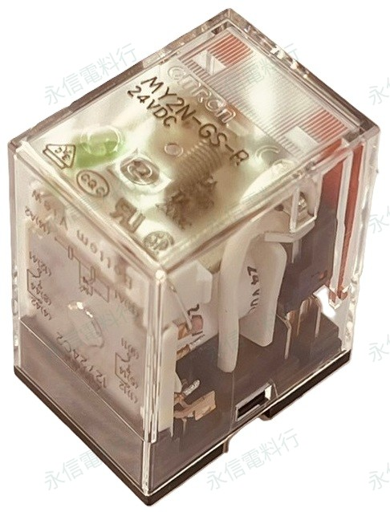

商品照片已套用永信電料行淡綠灰斜向浮水印；點選縮圖可切換照片與接線圖視角。
 歐姆龍 OMRON
歐姆龍 OMRON插入式繼電器｜MY 系列
MY2N-GS-R DC 24V
依你提供的商品資料夾與實拍照片整理。更換繼電器時，至少應核對完整型號、線圈電壓、AC／DC、接點組數及底部接線圖，不應只依外殼尺寸判斷。
完整型號MY2N-GS-R
線圈電壓DC 24V
接點組數2 組（依本體接線圖）
商品照片5 張
規格核對提醒
同系列可能有不同線圈電壓、接點容量、LED／保護元件或端子配置。實際規格請依產品銘牌、原廠型錄及現場需求核對。
本網站不顯示即時庫存、價格與交期。
PRODUCT OVERVIEW
規格核對重點
- 品牌：歐姆龍 OMRON
- 完整型號：MY2N-GS-R
- 線圈規格：DC 24V（依資料夾與商品照片整理）
- 線圈電源：直流 DC
- 接點組數：2 組（依本體接線圖）
- 接點額定（本體標示）：10A 250VAC／10A 30VDC
- 腳位／接線：請依本體 Bottom View 接線圖與原設備配線逐點核對。
NAMEPLATE INFORMATION
商品規格表
品牌歐姆龍 OMRON
完整型號MY2N-GS-R
產品分類繼電器與控制繼電器
系列MY 系列
線圈電壓DC 24V
線圈電源DC
接點組數2 組（依本體接線圖）
接點額定（本體標示）10A 250VAC／10A 30VDC
接線／腳位依本體 Bottom View 接線圖核對
商品照片5 張
本頁只整理你提供的商品照片、資料夾名稱與可辨識銘牌內容；未確認的接點容量、認證、尺寸與其他電氣數值不自行推定。實際規格請依產品銘牌、原廠型錄及現場需求核對。